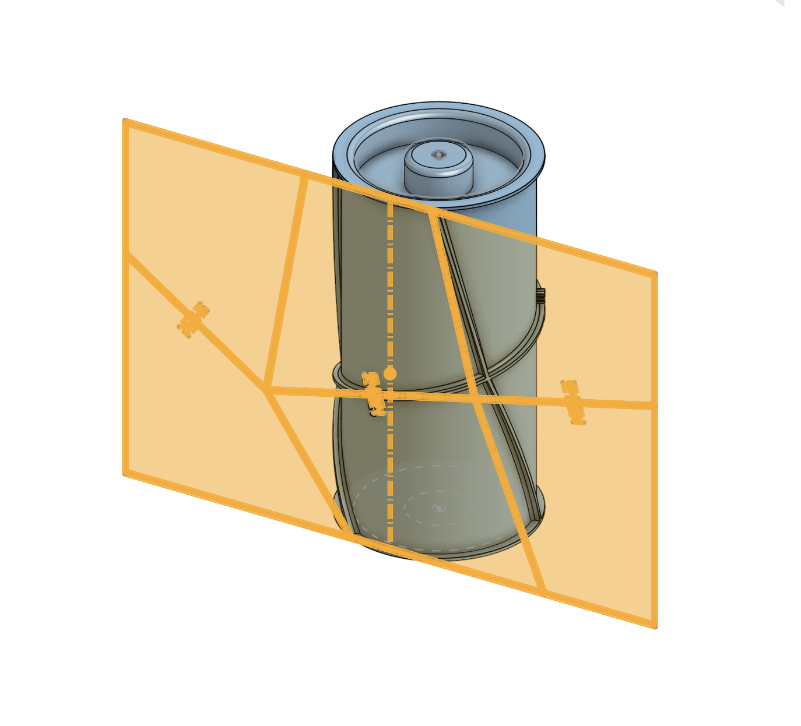
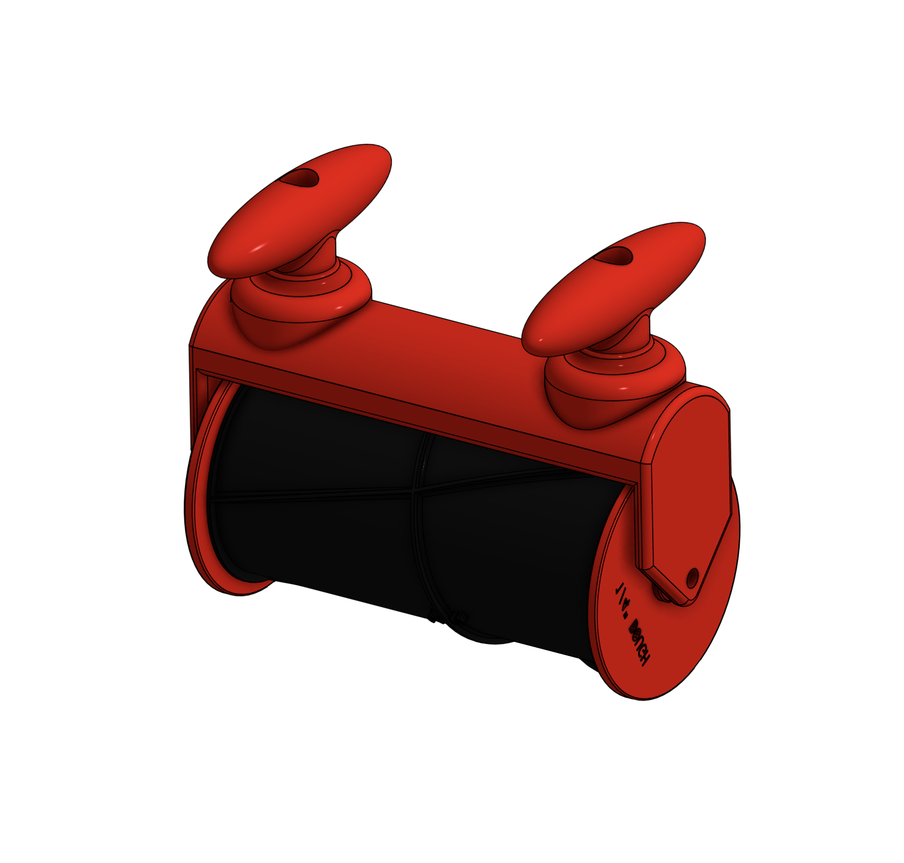
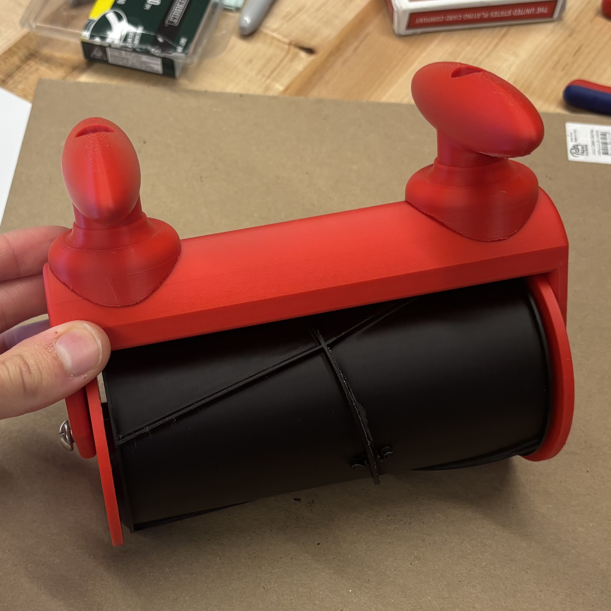
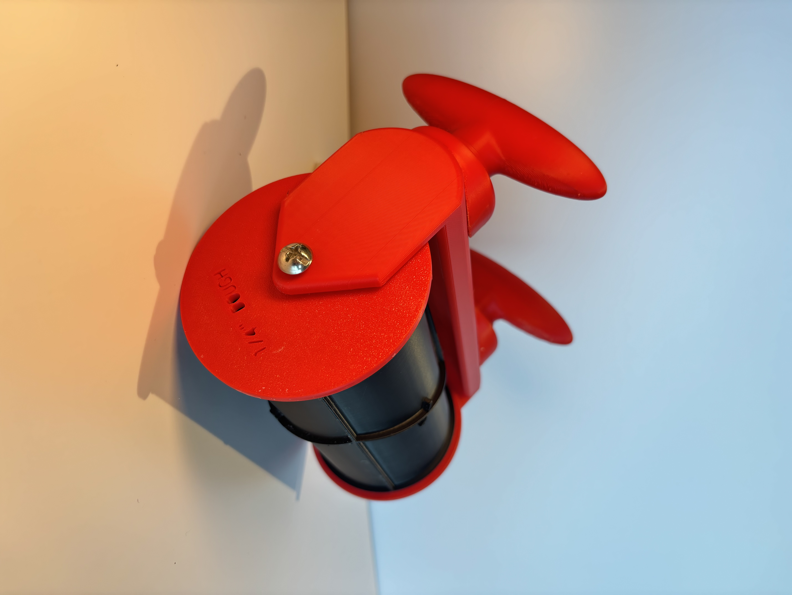
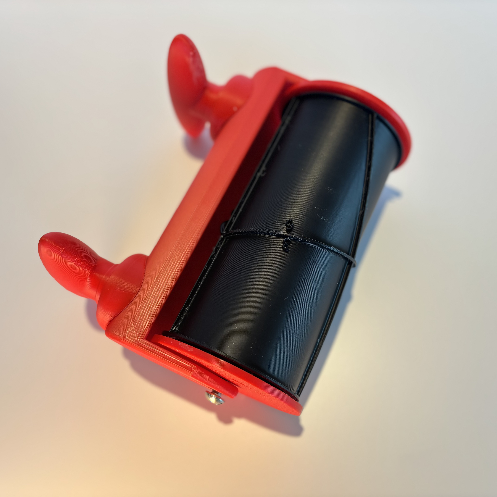

Design a rolling cookie cutter that produces a pattern of irregular shapes that can later be assembled into a larger cookie.
⚙ Onshape
⚙ BambuLab X1C 3D Printer
⚙ Tap Drill
The device was designed, tested, and refined over a 1 month period during my makerspace internship at the Lili'uokalani Center.
Concept
Queen Lili'uokalani's Quilt
A member of the culinary team wanted to make an activity for young learners to decorate cookies that could be assembled into a larger piece inspired by the Imprisonment Quilt. The problem: this quilt has a "crazy quilt" design, meaning no shapes are geometrically the same. For a repeatable, reliable activity, we needed a way to produce the base cookies with ease.

Recipe
Product Design Fundamentals
The cutter was modeled in Onshape and iterated through multiple layer resolution and assembly tests. More importantly, though, this project was particularly client-focused, and it was one of my first experiences designing a product around a client's vision.

Feedback
Worked Like a Charm
The team valued the robustness of the mechanism and the quality of the cuts in the soft, pliable dough. The little digits that the cutter imprints into the dough also made assembly of the cookies simple. The tool and the associated files were left with the culinary team for future use!


